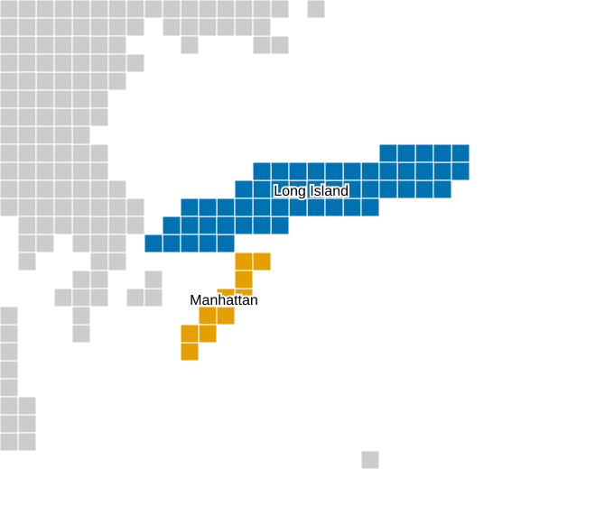
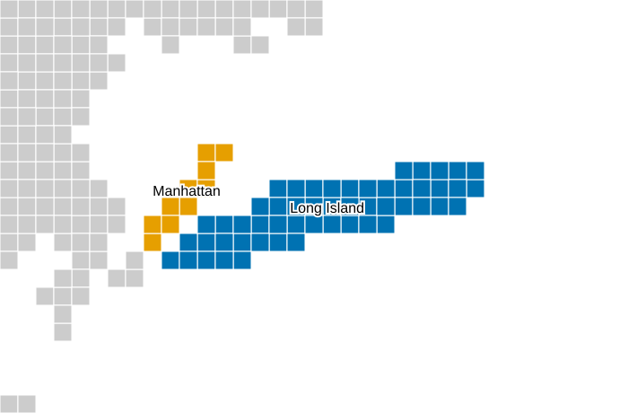
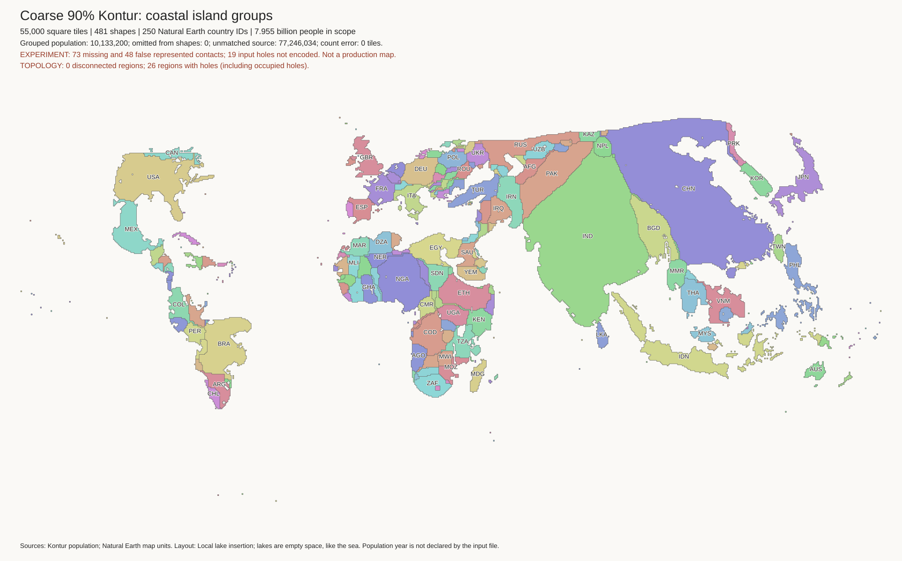
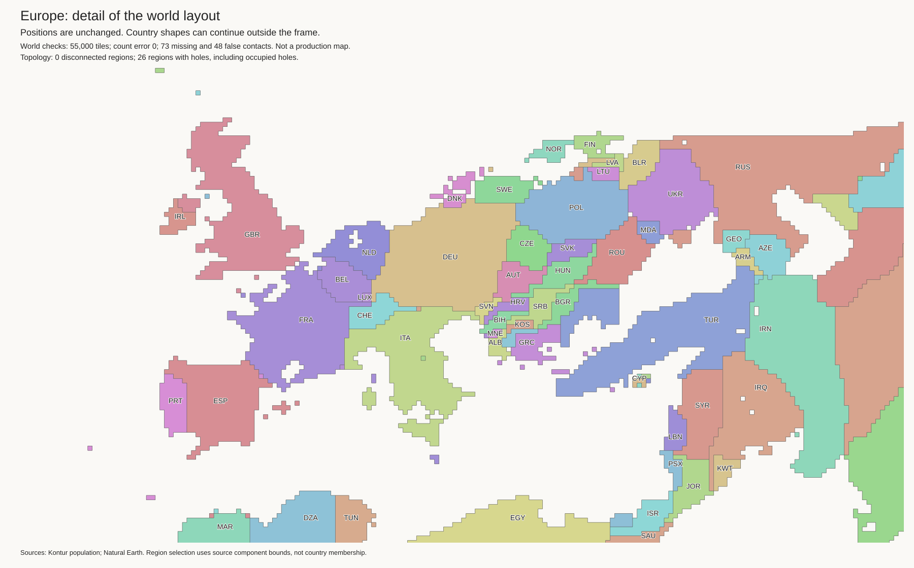
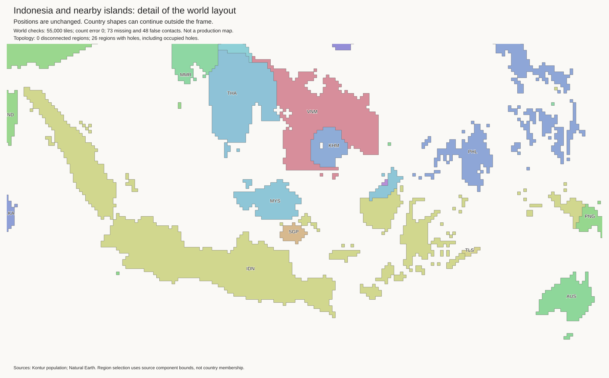
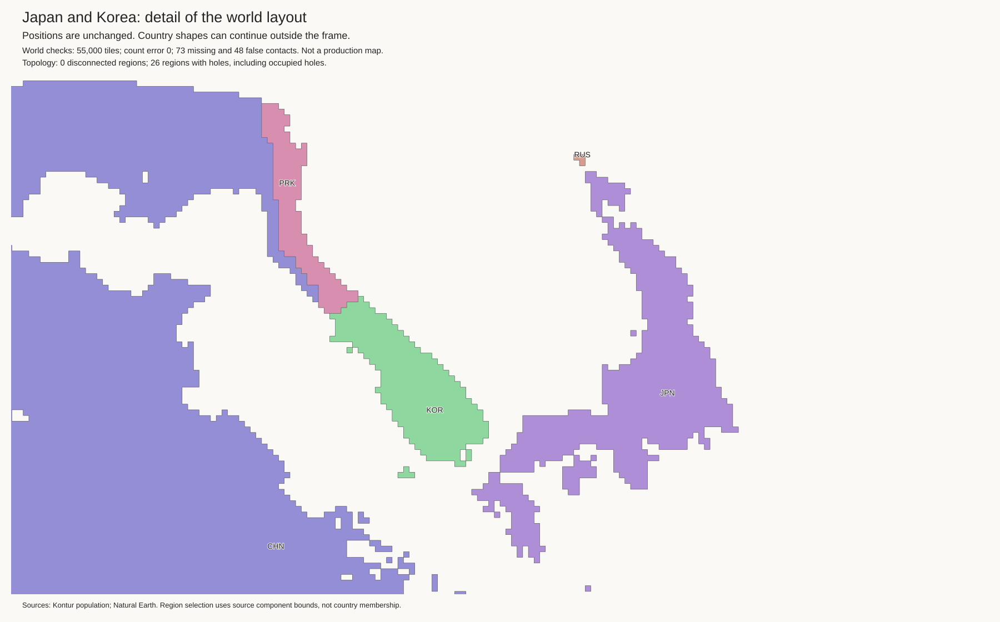

Further local trials: images and rejection reasons. Better border totals do not resolve the main defects.
New: Mainland trial with regional images and checks. Malaysia and Lithuania improve. Sweden no longer touches Germany. Paraguay and Nordic borders still need work. This is not a production map.
Experimental candidate. The current best and production mapping are unchanged. No strategic cuts.
The old grouping rule stopped at the nearest mainland coast. Thus, Manhattan did not join the nearby Long Island group. The optional new rule checks for a nearby larger island even when the mainland is nearer. It uses the existing distance limit. It has no country-specific rules.


All 55,000 tiles retain their component budgets. All 481 components are connected. The 45 lakes use 220 empty cells. The island stage does not move mainland cells. The repeated lake stage changes boundary cells in five mainland components. The totals remain 73 missing contacts and 48 false contacts. These are existing defects, not acceptable production results.
Baseline stage audit · Candidate audit · Metrics · Run record · Land tiles · Empty lake cells

New York, Europe, Indonesia, and Japan/Korea were checked visually. The four mainland defects remain open.


